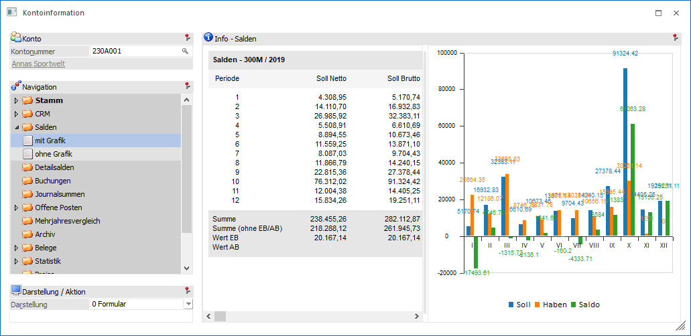
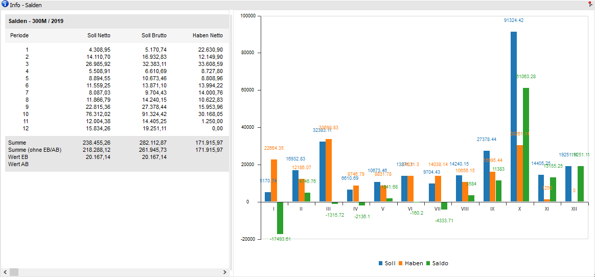
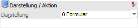

In dieser Ansicht werden auf der linken Seite die Salden des ausgewählten Kontos angezeigt und auf der rechten Seite werden die Salden in einer Grafik dargestellt.
Hinweis
Ob die Grafik in Form eines Balkendiagramms oder eines Liniendiagramms dargestellt werden soll kann im Programm Einstellungen - Konten (Bereich "Salden") definiert werden.

Die Ansicht "mit Grafik" besteht aus den folgenden Info-Elementen:
ü Info - Salden
ü Darstellung / Aktion
Info - Salden

An dieser Stelle werden die Salden dargestellt. Die Umsätze Soll und Haben der einzelnen Perioden werden jeweils Brutto und Netto (Saldo = nur Brutto) angezeigt. Im grafischen Teil werden die Umsätze (Soll + Haben und Saldo) nur Brutto dargestellt.
Achtung
Wird die Konteninfo für Sachkonten "mit" Steuerkennzeichen ausgegeben, so wird als Saldo der Nettowert dargestellt.
Hinweis
Bei Hauptbuchkonten werden die Salden inkl. Nebenbuchkonten angezeigt, wobei abhängig vom Gegenkonto eine Netto- und eine Bruttosumme angezeigt wird; z.B. bei einem Hauptbuchkonto mit zugewiesenen Personenkonten.
Darstellung / Aktion

Ø Darstellung
An dieser Stelle kann mit Hilfe einer Auswahlliste gewählt werden, ob die Darstellung der Salden in Form eines Formulars oder einer Tabelle erfolgen soll.